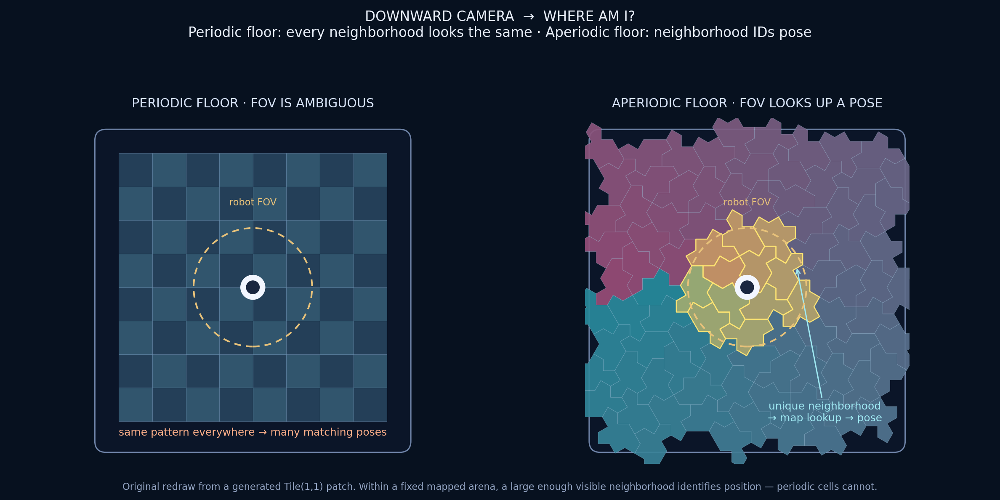

Robotics and mobility
Aperiodic surfaces and sensor layouts as localization substrates, coverage geometry, and sampling arrays.
The localization argument
Periodic floors are hostile to visual localization: every cell looks like every other cell, so a downward camera learns almost nothing about where it is. Random textures are locally distinctive but cannot be regenerated, queried, or shared as a ground-truth map across labs. An aperiodic monotile surface sits in the useful middle. Finite motifs recur, but within a fixed finite mapped patch, a sufficiently large local neighborhood can identify position. A robot that reads enough of the local tile configuration can therefore test absolute-pose lookup against a map generated from the same patch.

This is not only a 2023 idea. Autonomous-robot localization from aperiodic floor patterns was already proposed for Penrose-like tilings in the 1990s: scan a local patch, decode position from configuration, and improve precision as the scanned neighborhood grows. The accessible record is an antecedent and implementation discussion, not a modern controlled pose benchmark.[72] Monotiles sharpen the same program: one prototile, no matching rules to paint, stable IDs and affines for every tile, and regenerable patches for any arena size from generators such as aperiodicgenerator.com.
Sensors, arrays, and sampling
Robotics is not only cameras on floors. Where you place sensors, lidar stations, microphones, ultrasonic beacons, pressure taxels, RF nodes, is a spatial sampling problem. Periodic lattices alias; purely random deployments are hard to certify. Aperiodic monotile centroids and adjacency graphs give ordered, non-repeating sample layouts with documented spectral advantages over regular grids for wavefield sampling and beamforming.[37] That literature lives on Signal processing and imaging and Aliasing; robotics inherits it for:
- Multi-robot and WSN coverage, test centroid layouts for coverage holes and directional bias against regular, random, and blue-noise placements.
- Active sensing footprints, compare hierarchy-following paths with lawnmower and spiral paths for travel cost, revisit time, vibration spectra, and wear.
- Tactile and force arrays, taxel layouts without a single lattice frequency, so slip and contact signatures do not lock to the sensor grid.
SLAM, planning, and shared benchmarks
Because every patch regenerates exactly from a seed, an aperiodic arena is a shared benchmark terrain: two labs can print or project the same floor, publish trajectories against the same tile IDs, and compare SLAM or planning papers without arguing about texture randomness. Adjacent algorithmic work can extract repeated rectangular forms from exact finite symbolic grids; it does not recover polygonal tilings from camera fragments.[25] SAT methods can search finite polyform placement spaces at scale.[17] Hierarchical tile counts (Fibonacci / Lucas signatures) give multi-scale statistical fingerprints a localizer can use when vision is partial.[12]
Open problems that serious roboticists will recognize as load-bearing:
- How large a neighborhood must a downward camera see to uniquely identify pose under occlusion, dirt, and lighting change?
- Can substitution hierarchy be used as a coarse-to-fine localization cascade (cluster → tile → sub-vertex)?
- What happens to visual odometry drift on aperiodic vs checkerboard floors at the same spatial frequency content?
- How should motion planners exploit unique corridors without reintroducing periodic cost maps?
Mechanics and contact
- Grasping and traction textures tested for directional slip and wear, related to aperiodic lattice mechanics in Materials science and fluids
- Tire tread, road surface, and rail-bed studies where periodic patterns excite resonance
- Soft-robot skin layouts and conformal sensor meshes derived from clipped monotile patches
- Deployable / folding mobility structures; flat-foldability synthesis points the way[26][51]
These are proposed tests, not established monotile advantages. Use matched roughness, material, load, speed, and tread geometry, and report whether the canonical tiling or only an inspired texture was used.
Limits and validation
Localization depends on field of view, patch boundary, repeated finite motifs, occlusion, illumination, camera calibration, wear, and map accuracy. Ref. 72 establishes the broader feasibility of position detection from an aperiodic tiling, not turnkey performance for Hat or Spectre floors.[72] A useful benchmark reports pose error and failure rate versus visible neighborhood size, then tests held-out starts, rotated cameras, missing lines, dirt, and changed lighting.
Sensor-layout and contact proposals inherit ordinary constraints: wiring, minimum spacing, repair, traction, drainage, and safety. Aperiodicity is a layout property, not a guarantee of observability, coverage, security, or mechanical advantage.
See also
Signal processing and imaging, Aliasing, Algorithms and machine learning
Categories: Research frontiers